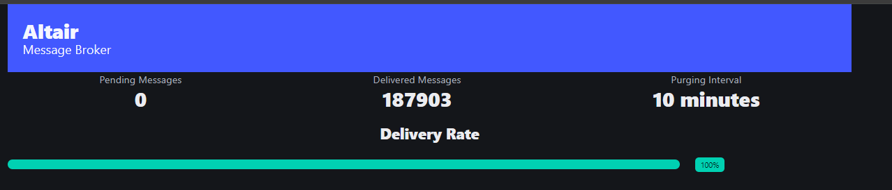

A Kafka-inspired, append-only message broker built from four goroutines, two channels, and a folder full of JSON files. No cluster, no partitions, no offsets — just a filesystem doing the job of a commit log.
Altair accepts a message over HTTP, appends it to a plain file, and later moves it into
another plain file on a schedule. If you can read JSON lines with tail -f,
you can debug this system without a single client library.
The design deliberately borrows Kafka's vocabulary — publish, consumer,
retention — while swapping every heavyweight piece for the simplest thing that
could plausibly work: a buffered Go channel instead of a distributed log, a directory of
JSON files instead of segments, and time.Sleep loops instead of a scheduler.
There is exactly one broker process and zero coordination between nodes, because there
are no other nodes.
| Kafka concept | Altair equivalent | Where |
|---|---|---|
| Topic | the origin field on a message | handlers.Message.Origin |
| Partition segment | one file per origin, per day | messages/ready/{origin}-{date}.json |
| Commit log append | O_APPEND write, single writer goroutine | handlers.fileWriterWorker |
| Consumer group | fixed-size worker pool draining one channel | workers.ConsumerWorker |
| Retention policy | rewrite-in-place, drop lines older than 15m | workers.PurgeMessagesWorker |
| Segment cleanup | two-phase delete via a trash directory | RemoveEmptyFilesWorker → DeleteMakedFiles |
This is the one place numbering means something in this document — it's the actual order of events for a single message, from socket to deletion.
The handler decodes the JSON body into a Message, then calls
Instantiate(), which assigns a UUID, sets ReceivedAt to
time.Now().UTC(), and requires a non-empty origin — unless
stress-test: true is set, in which case origin defaults to
"stress-test". A missing origin without that flag is a 400.
The marshaled message is pushed onto the package-level fileWriterChan
(buffer size 200,000). This is what makes /publish return fast — the HTTP
handler never touches disk itself.
A single fileWriterWorker, started from init(), drains the
channel and appends the message as one JSON line to
messages/ready/{origin}-{YYYY-MM-DD}.json, adding a leading newline if the
file isn't empty. Being single-goroutine is what keeps concurrent appends to the same
file safe without a lock.
ConsumerWorker lists every file in messages/ready, opens each
one, and streams non-empty lines into a 5,000-slot msgChan. Once a file has
been fully read it's truncated with os.Truncate — not deleted — so the same
day's file keeps accepting new lines.
A worker pool sized to runtime.NumCPU() * 2 consumes msgChan
concurrently and calls saveProcessed for each line. This is the only step
that runs with real parallelism.
Each consumed line is appended verbatim to
messages/processed/{YYYYMMDD_HH}.json — one file per hour, shared across
all origins.
PurgeMessagesWorker reads every processed file, keeps only lines whose
ReceivedAt is within the last 15 minutes, writes the survivors to a
.tmp file, then removes the original and renames the temp file over it.
There is no separate deletion step for expired messages — they simply aren't rewritten.
Every 5 minutes, RemoveEmptyFilesWorker checks both
messages/ready and messages/processed for zero-line files and
moves them into messages/trash. Every 15 minutes,
DeleteMakedFiles removes everything sitting there. The two-step handoff
exists so a file being renamed away is never also the file a reader has open.
Four packages, each with one job. Nothing imports in a cycle.
The only package that touches the network on the write path.
Message struct + validationPublishHandler — the HTTP entry pointfileWriterChan / fileWriterWorker — the async write pathEvery goroutine that runs on a timer instead of a request lives here.
ConsumerWorker — ready → processedPurgeMessagesWorker — retentionRemoveEmptyFilesWorker / DeleteMakedFiles — cleanupA small HTMX + Bulma UI, entirely read-only against the filesystem.
GET / — renders web/templates/home.htmlGET /status-report — polled every 1s by the page itselfmessages/ to compute a delivery percentageThe only package every other package is allowed to depend on.
shared.Log — the process-wide zap loggerConsumerWorkingPool = runtime.NumCPU() * 2The filesystem is the database. Three directories, each with a distinct role in a message's life.
Five goroutines run for the lifetime of the process. Only one of them is a real pool.
| Worker | Cadence | Concurrency | Notes |
|---|---|---|---|
| fileWriterWorker | on channel recv | 1 goroutine | chan buffer 200,000 — decouples HTTP from disk I/O |
| ConsumerWorker | every 5s | 1 producer + NumCPU×2 pool | msgChan buffer 5,000 |
| PurgeMessagesWorker | every 15m | 1 goroutine, sequential | rewrite-then-rename per file |
| RemoveEmptyFilesWorker | every 5m | 2 instances | one for ready/, one for processed/ |
| DeleteMakedFiles | every 15m | 1 goroutine, sequential | os.RemoveAll over trash/ |
Three routes. No auth, no middleware, no versioning.
Accepts a message, returns it stamped with id and received_at.
HTMX partial, polled by the dashboard every second.
curl -X POST localhost:8080/publish \
-d '{"origin":"orders","data":{"order_id":42}}'
{
"origin": "orders",
"id": "c1a9e6c2-...",
"data": { "order_id": 42 },
"received_at": "2026-08-12T14:03:11Z",
"stress-test": false
}
Missing origin without "stress-test": true → 400
with the error text as the body.
web/templates/home.html loads Bulma and HTMX from a CDN and renders a single
HTMX-driven partial that re-fetches /status-report every second — no
JavaScript beyond what HTMX injects.

Every package logs through shared.Log, a single *zap.Logger
configured with the production JSON encoder, ISO-8601 timestamps, capitalized levels, and
an INFO floor, writing straight to stdout. There is no log or fmt
logging anywhere in the codebase by convention.
{"L":"INFO","T":"2026-08-12T14:03:16.201Z","M":"Message appended to: messages/ready/orders-2026-08-12.json"}
main.go also wires graceful shutdown: SIGINT/SIGTERM
trigger server.Shutdown with a 5-second context, and Log.Sync()
is deferred at process start.
Grounded in what the code actually does today, not a roadmap.
processSingleMessage only writes to processed/; the code marks HTTP delivery to real subscribers as a future TODO.processed/ — and that's purged after 15 minutes./publish accepts any request from anyone who can reach port 8080.PurgeMessagesWorker re-reads and re-writes every processed file each cycle — fine at current volume, a bottleneck at high message rates.